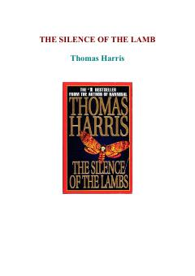

TSFBI kursanti Clarice Starling serial qotil Hannibal Lekterni so'roq qilishga kirishadi.
FBI akademiyasi kursanti Klaris Starling xavfli jinoyatchi Hannibal Lekter bilan suhbatlashish uchun maxfiy topshiriq oladi. Ushbu psixologik triller o'quvchini seriyali qotillarni fosh qilish jarayonidagi murakkab va sirli voqealar girdobiga olib kiradi.